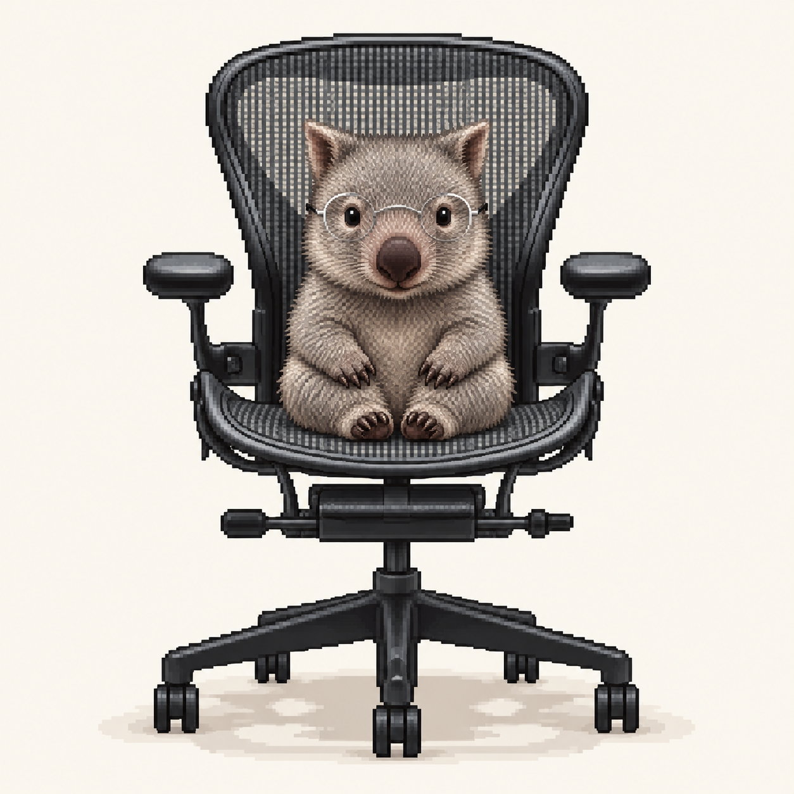
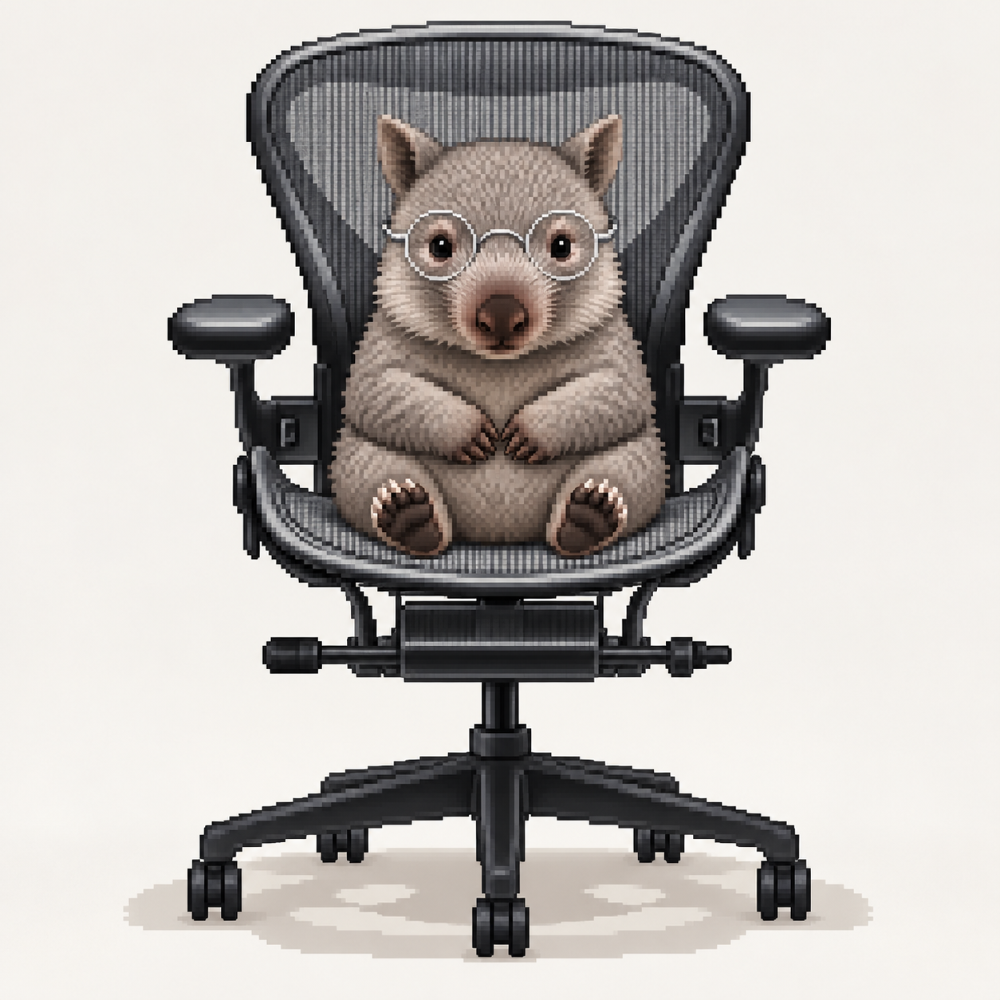
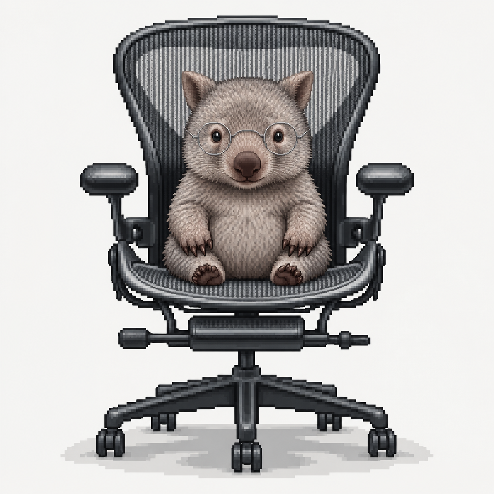
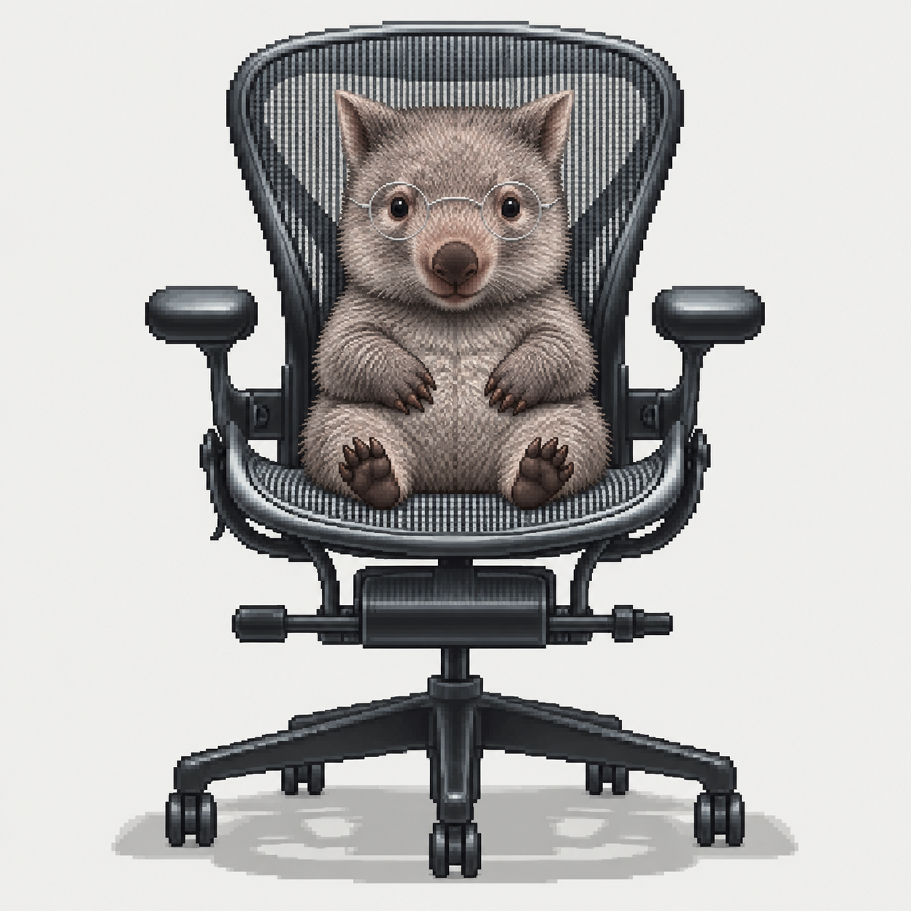
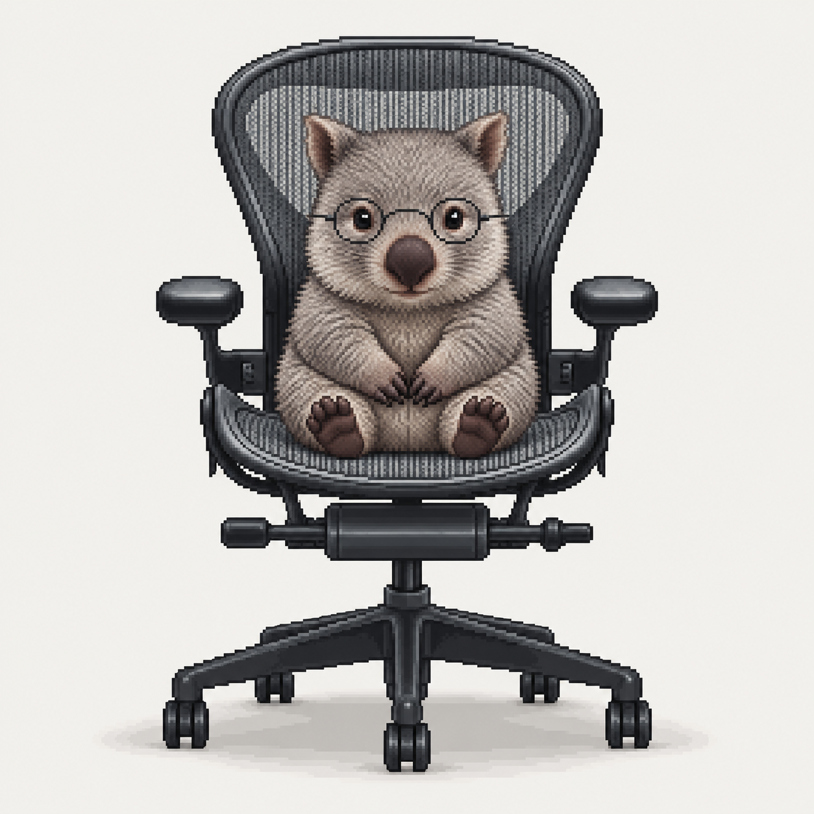

01기본 자세
회색 털과 둥근 안경을 기준으로 잡은 정면 자세.
BABY WOMBAT / GREY / FRONT VIEW / 01–05
회색 털과 안경, 정면 자세를 비교해 보세요. 단순한 중성 배경에 캐릭터와 의자 전신을 담았습니다. 이미지를 누르면 원본을 새 탭에서 볼 수 있습니다.

회색 털과 둥근 안경을 기준으로 잡은 정면 자세.

작은 앞발을 몸 앞에 모은 자세.

통통한 배와 짧은 다리가 드러나는 형태.

의자에 편안하게 기대앉은 자세.

윤곽과 표정을 간결하게 정리한 기본형.